東京大学 1995年 理科 第5問
問題
サイコロをn回投げて、x y平面上の点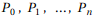を次の規則(a), (b)によって定める。
(a) 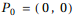
(b) 1≤k≤nのとき、k回目に出た目の数が1,2,3,4のときには、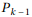をそれぞれ東、北、西、南に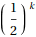だけ動かした点を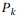とする。またk回目に出た目の数が5,6のときには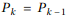とする。ただしy軸の正の向きを北と定める。
(1)  がx軸上にあれば、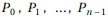もすべてx軸上にあることを示せ。
がx軸上にあれば、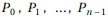もすべてx軸上にあることを示せ。
(2)  が第1象限{(x,y)|x>0,y>0}にある確率をnで示せ。
が第1象限{(x,y)|x>0,y>0}にある確率をnで示せ。
解答
(1)
1≤k≤nとし、k-1回目まで1,3,5,6だけが出て、k回目に初めて2が出たとする。
この時の のy座標はである。
のy座標はである。
その後k+1回目からn回目まですべて4が出たときの のy座標は
のy座標は
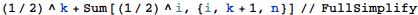
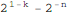
となるが、
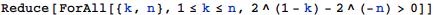

だから点 のy座標は正となる。
のy座標は正となる。
また、k+1回目からn回目の間に4以外が１回以上出た場合は、y座標はこれより大きくなるので、k-1回目まで1,3,5,6だけが出て、k回目に初めて2が出たときはかならず点 のy座標はは必ず正となる。
のy座標はは必ず正となる。
同様の議論により、k-1回目まで1,3,5,6だけが出て、k回目に初めて4が出たときは、点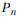のy座標は必ず負になる。
上記をまとめて「1回でも2か4が出た場合、点のy座標は0にならない」ことがわかり、
対偶を取って「点 のy座標が0ならば、１回も2または4が出ていない」ことがいえる。
のy座標が0ならば、１回も2または4が出ていない」ことがいえる。
1回も2または4が出ていないなら点のy座標はすべて0であるので、題意は示された。
(2)
1≤k≤nとして、点が
原点にある確率を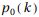
x軸上の正の部分にある確率を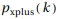
x軸上の負の部分にある確率を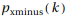
y軸上の正の部分にある確率を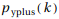
y軸上の負の部分にある確率を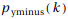
第n象限にある確率を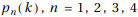とする。
(1)の結果はx座標についても同様で、k回目でx座標が正ならその後も必ず正、k回目でx座標が負ならその後も必ず負である。
これらを使ってk回目の状態とk+1回目の状態の間で連立漸化式を立てて解くと、
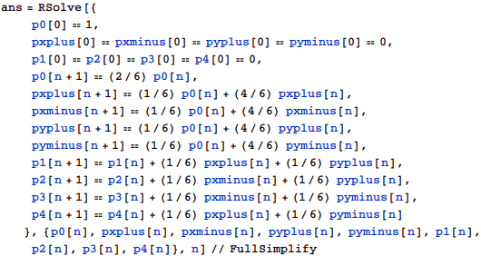
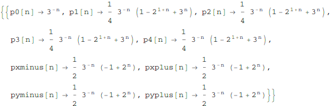
従って第1象限にある確率は
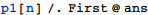
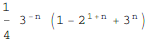
補足・感想
具体的な数値を与えられていない確率の問題はMathematicaを活用させにくいが、漸化式で表すことができる場合はMathematicaに解かせる形にできる。